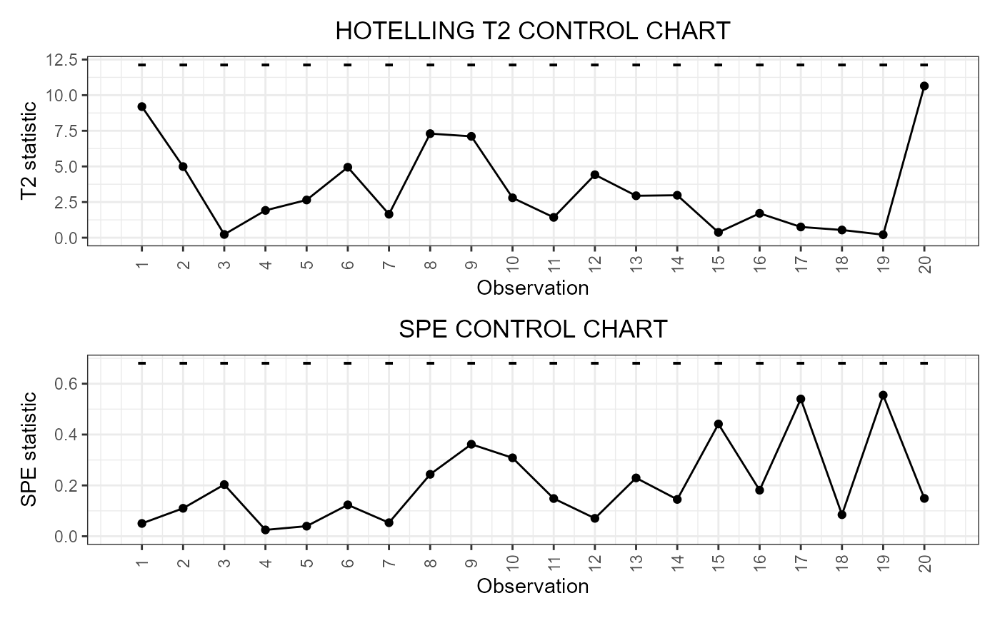

R/04_phaseII.R
control_charts_pca.RdThis function builds a data frame needed to plot the Hotelling's T2 and squared prediction error (SPE) control charts based on multivariate functional principal component analysis (MFPCA) performed on multivariate functional data, as Capezza et al. (2020) for the multivariate functional covariates. The training data have already been used to fit the model. An optional tuning data set can be provided to estimate the control chart limits. A phase II data set contains the observations to be monitored with the control charts.
control_charts_pca(
pca,
components = NULL,
tuning_data = NULL,
newdata,
alpha = 0.05,
limits = "standard",
seed,
nfold = 5,
ncores = 1,
tot_variance_explained = 0.9,
single_min_variance_explained = 0,
absolute_error = FALSE
)An object of class pca_mfd
obtained by doing MFPCA on the
training set of multivariate functional data.
A vector of integers with the components over which to project the multivariate functional data. If this is not NULL, the arguments `single_min_variance_explained` and `tot_variance_explained` are ignored. If NULL, components are selected such that the total fraction of variance explained by them is at least equal to the argument `tot_variance_explained`, where only components explaining individually a fraction of variance at least equal to the argument `single_min_variance_explained` are considered to be retained. Default is NULL.
An object of class mfd containing
the tuning set of the multivariate functional data, used to estimate the
T2 and SPE control chart limits.
If NULL, the training data, i.e. the data used to fit the MFPCA model,
are also used as the tuning data set, i.e. tuning_data=pca$data.
Default is NULL.
An object of class mfd containing
the phase II set of the multivariate functional data to be monitored.
If it is a number between 0 and 1,
it defines the overall type-I error probability and the Bonferroni
correction is applied by setting the type-I error probability
in the two control charts equal to alpha/2.
If you want to set manually the Type-I error probabilities in the
two control charts, then the argument alpha must be
a named list
with two elements, named T2 and spe,
respectively, each containing
the desired Type I error probability of
the corresponding control chart.
Default value is 0.05.
A character value.
If "standard", it estimates the control limits on the tuning
data set. If "cv", the function calculates the control limits only on the
training data using cross-validation
using calculate_cv_limits. Default is "standard".
If limits=="cv",
since the split in the k groups is random,
you can fix a seed to ensure reproducibility.
Deprecated: use set.seed() before calling
the function for reproducibility.
If limits=="cv", this gives the number of groups k
used for k-fold cross-validation.
If it is equal to the number of observations in the training data set,
then we have
leave-one-out cross-validation.
Otherwise, this argument is ignored.
If limits=="cv", if you want perform the analysis
in the k groups in parallel,
give the number of cores/threads.
Otherwise, this argument is ignored.
The minimum fraction of variance that has to be explained by the set of multivariate functional principal components retained into the MFPCA model fitted on the functional covariates. Default is 0.9.
The minimum fraction of variance that has to be explained by each multivariate functional principal component such that it is retained into the MFPCA model. Default is 0.
If FALSE, the SPE statistic, which monitors the principal components not retained in the MFPCA model, is calculated as the sum of the integrals of the squared prediction error functions, obtained as the difference between the actual functions and their approximation after projection over the selected principal components. If TRUE, the SPE statistic is calculated by replacing the square of the prediction errors with the absolute value, as proposed by Capizzi and Masarotto (2018). Default value is FALSE.
A data.frame with as many rows as the number of
multivariate functional observations in the phase II data set and
the following columns:
* one id column identifying the multivariate functional observation
in the phase II data set,
* one T2 column containing the Hotelling T2 statistic
calculated for all observations,
* one column per each functional variable, containing its contribution to the T2 statistic,
* one spe column containing the SPE statistic calculated
for all observations,
* one column per each functional variable, containing its contribution to the SPE statistic,
* T2_lim gives the upper control limit of
the Hotelling's T2 control chart,
* one contribution_T2_*_lim column per each
functional variable giving the
limits of the contribution of that variable
to the Hotelling's T2 statistic,
* spe_lim gives the upper control limit of the SPE control chart
* one contribution_spe*_lim column per each
functional variable giving the
limits of the contribution of that variable to the SPE statistic.
Capezza C, Lepore A, Menafoglio A, Palumbo B, Vantini S. (2020) Control charts for monitoring ship operating conditions and CO2 emissions based on scalar-on-function regression. Applied Stochastic Models in Business and Industry, 36(3):477--500. <doi:10.1002/asmb.2507>
Capizzi, G., & Masarotto, G. (2018). Phase I distribution-free analysis with the R package dfphase1. In Frontiers in Statistical Quality Control 12 (pp. 3-19). Springer International Publishing.
library(funcharts)
data("air")
air <- lapply(air, function(x) x[1:220, , drop = FALSE])
fun_covariates <- c("CO", "temperature")
mfdobj_x <- get_mfd_list(air[fun_covariates],
n_basis = 15,
lambda = 1e-2)
y <- rowMeans(air$NO2)
y1 <- y[1:100]
y_tuning <- y[101:200]
y2 <- y[201:220]
mfdobj_x1 <- mfdobj_x[1:100]
mfdobj_x_tuning <- mfdobj_x[101:200]
mfdobj_x2 <- mfdobj_x[201:220]
pca <- pca_mfd(mfdobj_x1)
cclist <- control_charts_pca(pca = pca,
tuning_data = mfdobj_x_tuning,
newdata = mfdobj_x2)
plot_control_charts(cclist)
